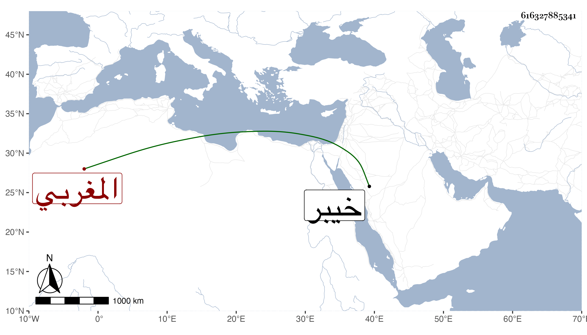

0902Sakhawi.DawLamic.ITO20230111-ara1.EIS1600.616327885341
Biography ID: 616327885341
486
محمد الزرهوني الخيبري نسبة لخيبر قرية من جبل زرهون المغربي ويلقب الدقون بفتح المهملة وتشديد القاف وآخره نون كان مع عاميته يتكلم في العلم كلاما متينا . مات في سنة إحدى وسبعين أفاده لي بعض الآخذين عني من المغاربة .
